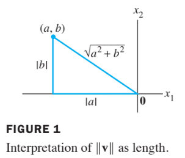

Orthogonality and Least Square
6.1 Inner Product, Length, and Orthogonality
Inner Prodcut
If and are vector in , then we regard and as matrices.
The transpose is a matrix, and the matrix product is an matrix, which we write as a single real number (a scalar) without brackets.
The number is called the inner product of and , and it is written as .
This inner product is also referred to as a dot product
If and ,
then the inner product of and is
Theorem 1
Let , and be vectors in , and let be a scalar. Then
- , and if and only if
Properties (2) and (3) can be combined several times to produce the following useful rule:
The Length of a Vector
If is in , with entries , then the square root of is defined because is nonengative.
Definition of Length
The length (or norm) of is the nonnegative scalar defined by
, and
Suppose is in , say
If we identify with a geometric point in the plane, as usual, then coincides with the standard notion of the length of the line segment of from the origin to .
This follows from the Pythagorean Theorem applied to a triangle such as the one shown in the following figure.

For any scalar , the length is times the length of . That is
A vector whose length is 1 is called a unit vector.
If we divide a nonzero vector \frac{1}{\lVert \bf{v} \rVert}\bf{u}\bf{u}\frac{1}{\lVert \bf{v} \rVert}\lVert \bf{v} \rVert\bf{u}\bf{v}\bf{v}\bf{u}\bf{v} \bf{v}=(1,-2,2,0)\bf{u}\bf{v}\bf{v} \lVert \bf{v} \rVert^2 = \bf{v} \cdot \bf{v} = (1)^2 + (-2)^2 +(2)^2 +(0)^2 = 9 \ \lVert \bf{v} \rVert = \sqrt{9} = 3 \bf{v}\frac{1}{\lVert \bf{v} \rVert} \begin{align} \bf{u} &= \frac{1}{\lVert \bf{v} \rVert} \bf{v} \ &= \frac{1}{3}\bf{v} \ &= \frac{1}{3}\begin{bmatrix}1 \ -2 \ 2 \ 0 \end{bmatrix} \ &= \begin{bmatrix} 1/3 \ -2/3 \ 2/3 \ 0 \end{bmatrix} \end{align} n\bf{u}\bf{v}\mathbb{R}^n\bf{u}\bf{v}\text{dist}(\bf{u},\bf{v})\bf{u} - \bf{v} \text{dist}(\bf{u},\bf{v}) = \lVert \bf{u}-\bf{v} \rVert \bf{u}=(7,1)\bf{v}=(3,2) \begin{align} \bf{u}-\bf{v} &= \begin{bmatrix}7 \ 1\end{bmatrix}-\begin{bmatrix}3 \ 2\end{bmatrix}=\begin{bmatrix}4 \ -1\end{bmatrix}\ \lVert \bf{u}-\bf{v} \rVert &= \sqrt{4^2+(-1)^2} = \sqrt{17} \end{align} \bf{u}\bf{v}\bf{u}-\bf{v}\bf{u}-\bf{v}\bf{v}\bf{u}\bf{u}\bf{v}\bf{u}−\bf{v}\bf{0}\mathbb{R}^2\mathbb{R}^3\bf{u}\bf{v}\bf{u}\bf{v}\bf{u}-\bf{v} \begin{align} [\text{dist}(\bf{u},\bf{-v})]^2 &= \lVert \bf{u}-(-\bf{v}) \rVert ^2 = \lVert \bf{u}+\bf{v} \rVert ^2 \ &=(\bf{u}+\bf{v})\cdot (\bf{u}+\bf{v}) \ &=\bf{u}\cdot (\bf{u}+\bf{v})+ \bf{v}\cdot (\bf{u}+\bf{v}) & \text{Theorem 1 (2)} \ &=\bf{u}\cdot \bf{u}+ \bf{u}\cdot \bf{v})+ \bf{v}\cdot \bf{u}+\bf{v} \cdot \bf{v} & \text{Theorem 1 (1),(2)} \ &=\lVert \bf{u} \rVert ^2 + \lVert \bf{v} \rVert ^2 + 2\bf{u}\cdot \bf{v} & \text{Theorem 1 (1)} \end{align} \bf{v}\bf{−v} \begin{align} [\text{dist}(\bf{u},\bf{v})]^2 &= \lVert \bf{u} \rVert ^2 + \lVert \bf{-v} \rVert ^2 +2\bf{u}\cdot (\bf{-v}) \ &=\lVert \bf{u} \rVert ^2 +\lVert \bf{-v} \rVert ^2 -2\bf{u}\cdot \bf{v} \end{align} 2\bf{u}\cdot\bf{v}=-2\bf{u}\cdot\bf{v} \bf{u} \cdot \bf{v} = 0\bf{u}\bf{v} \bf{u} \cdot \bf{v} = 0\bf{u}\bf{v}\mathbb{R}^n\bf{u}\cdot\bf{v}= 0\mathbb{R}^n\bf{0}^T \bf{v} = 0\bf{v}\bf{u}\bf{v} \lVert \bf{u}+\bf{v} \rVert^2 = \lVert \bf{u} \rVert ^2 + \lVert \bf{v} \rVert ^2\bf{z}W\mathbb{R}^n\bf{z}W\bf{z}WWW^{\perp}\bf{x}W^{\perp}\bf{x}WW^{\perp}\mathbb{R}^nAm \times nAAAA^{T} (\text{Row }A)^{\perp} = \text{Nul }A (\text{Col }A)^{\perp} = \text{Nul }A^T A\bf{x}\bf{x}\text{Nul }A\bf{x}A\mathbb{R}^nA\bf{x}\text{Row }A\bf{x}\text{Row }A\bf{x}AA\bf{x}=\bf{0}A^TA^TA^T\bf{u}\bf{v}\bf{u}\bf{v} \bf{ur} \cdot \bf{v} = \lVert \bf{u} \rVert \lVert \bf{v} \rVert \cos{\upvartheta} \tag{2} \mathbb{R}^n\lVert \bf{u} \rVert \lVert \bf{v} \rVert \lVert \bf{u}-\bf{v} \rVert \lVert \bf{u}-\bf{v} \rVert ^2 = \lVert \bf{u} \rVert ^2 + \lVert \bf{v} \rVert ^2 - 2 \lVert \bf{u} \rVert \lVert \bf{v} \rVert \cos{\upvartheta} \begin{align} \end{align} \mathbb{R}^nn > 3\mathbb{R}^n\cos{\upvartheta}\bf{u}\bf{v}$$ is called a correlation coefficient.